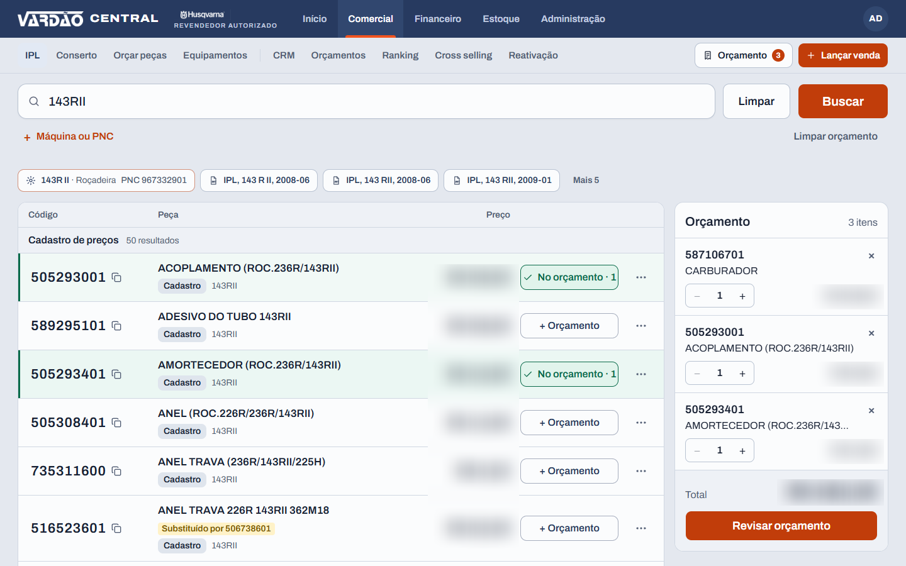

Desenvolvedor Full-Stack Júnior
Aberto a oportunidades: Full-Stack Júnior e Java Backend Júnior
React, TypeScript, Node.js, Java, Spring Boot e PostgreSQL

1 2 3Vardão Central, sistema em uso diário que desenvolvi sozinho. Dados fictícios.